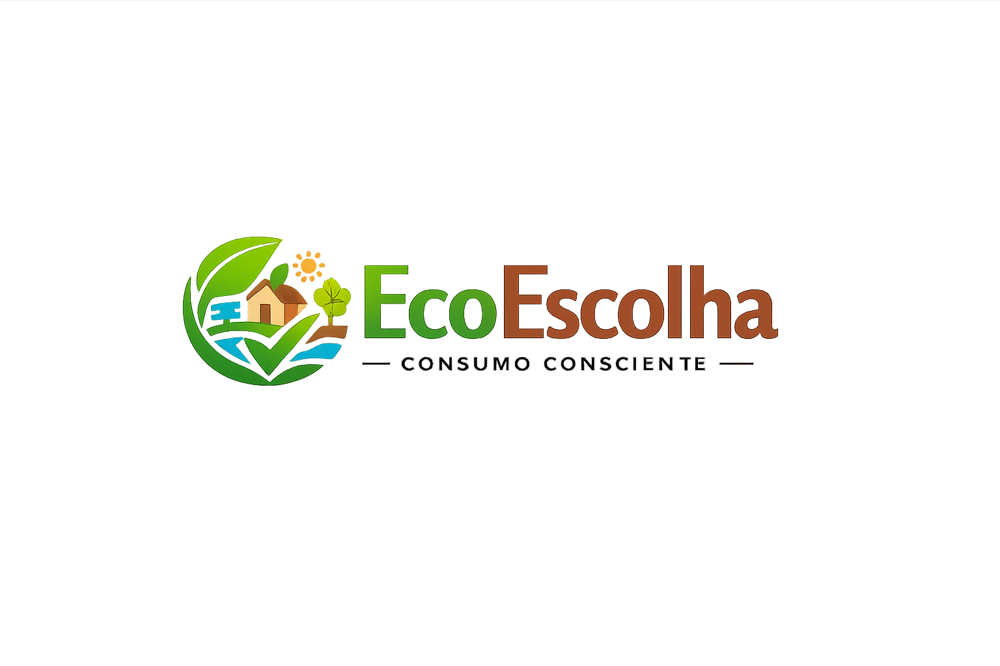
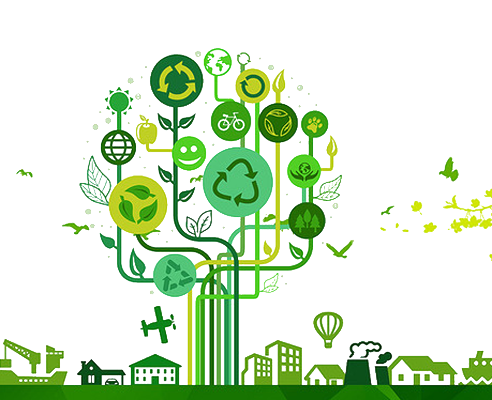
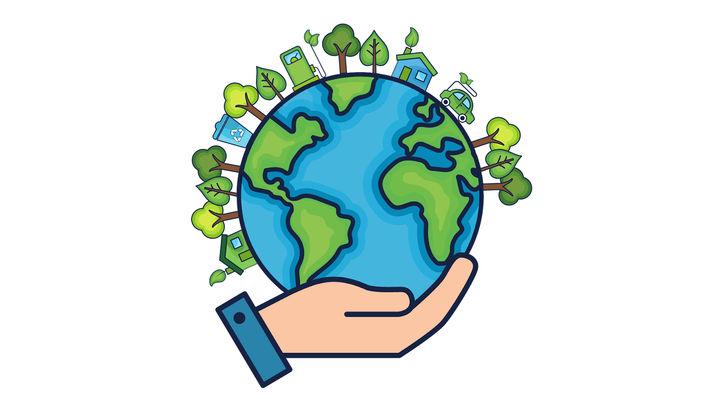
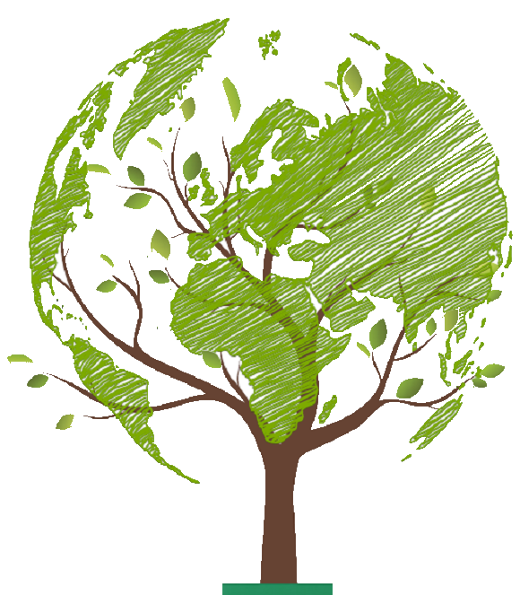
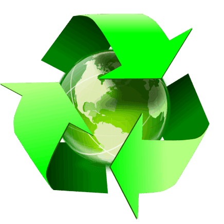

Cuidar do planeta é garantir o futuro
Saiba Mais



Sustentabilidade é a capacidade de usar os recursos naturais de forma equilibrada, sem causar danos ao meio ambiente e garantindo que eles continuem disponíveis no futuro. Isso significa evitar desperdícios, preservar a natureza e adotar hábitos mais conscientes no dia a dia. Não se trata apenas do meio ambiente, mas também de qualidade de vida e responsabilidade social.
O consumo excessivo acontece quando as pessoas compram além do que realmente precisam, geralmente influenciadas por marketing, status ou impulso momentâneo. Esse comportamento sustenta um ciclo contínuo de produção, onde mais recursos naturais são extraídos, mais energia é utilizada e mais resíduos são gerados. O problema não está só no ato de consumir, mas em toda a cadeia envolvida, fabricação, transporte, embalagem e descarte. Muitos produtos são usados poucas vezes antes de serem substituídos, o que evidencia um padrão de consumo insustentável. Além disso, o incentivo constante à novidade faz com que itens ainda funcionais sejam descartados sem necessidade. Reduzir esse impacto exige uma mudança de mentalidade, priorizando necessidade em vez de desejo imediato. Consumir melhor não é parar de consumir, mas fazer escolhas mais conscientes e duráveis. No longo prazo, isso reduz tanto o impacto ambiental quanto o desperdício financeiro.
O desperdício de recursos ocorre quando água, energia e matérias-primas são utilizados de forma ineficiente ou desnecessária. Esse problema está presente tanto em processos industriais quanto em hábitos cotidianos, muitas vezes passando despercebido. Cada recurso desperdiçado representa um impacto acumulado, já que sua obtenção envolve extração, transporte e processamento. No caso da água, por exemplo, o desperdício contribui para a escassez em diversas regiões. Já o uso excessivo de energia está diretamente ligado à emissão de poluentes e ao aumento da demanda por fontes não renováveis. Outro ponto importante é o desperdício de alimentos, que além de gerar lixo, representa todos os recursos usados na sua produção sendo inutilizados. Reduzir esse cenário exige atenção aos hábitos e maior eficiência no uso diário. Pequenas mudanças, quando somadas, têm efeito significativo. O desperdício não é só um problema ambiental, mas também de gestão e responsabilidade.
A poluição plástica é um dos problemas ambientais mais persistentes da atualidade, principalmente devido ao uso de itens descartáveis. Diferente de outros materiais, o plástico não se decompõe completamente, apenas se fragmenta em partículas menores chamadas microplásticos. Essas partículas já foram encontradas em oceanos, rios, alimentos e até no corpo humano. O impacto vai além da poluição visual, afetando diretamente a fauna e os ecossistemas. Animais ingerem ou ficam presos em resíduos plásticos, muitas vezes levando à morte. Além disso, a produção de plástico depende de combustíveis fósseis, o que agrava ainda mais o impacto ambiental. A reciclagem ajuda, mas é limitada e não acompanha o volume produzido. Por isso, a solução mais eficaz é reduzir o uso desde a origem. Substituir descartáveis por opções reutilizáveis é uma das formas mais diretas de enfrentar esse problema.
A produção em massa é responsável por tornar produtos mais acessíveis, mas também intensifica o impacto ambiental em larga escala. Para manter altos níveis de produção, é necessário extrair grandes quantidades de recursos naturais e consumir muita energia. Esse modelo frequentemente prioriza velocidade e custo baixo, resultando em produtos com menor durabilidade. Como consequência, aumenta-se o descarte e a necessidade de reposição constante. Além disso, o processo industrial gera poluição do ar, da água e do solo, muitas vezes em níveis difíceis de controlar. Outro problema é o incentivo ao consumo contínuo, já que produtos baratos são mais facilmente substituídos. Embora seja essencial para a economia atual, esse sistema precisa ser ajustado para reduzir seus impactos. Investir em qualidade, durabilidade e eficiência é fundamental. Sem mudanças, a produção em massa continua sendo um dos principais motores da degradação ambiental.
A poluição do ar é causada principalmente pela queima de combustíveis fósseis em veículos, indústrias e usinas de energia. Esse processo libera gases como dióxido de carbono e partículas finas que afetam diretamente a saúde humana e o equilíbrio ambiental. Problemas respiratórios, doenças cardiovasculares e até redução da expectativa de vida estão ligados à má qualidade do ar. Além disso, esses gases intensificam o efeito estufa, contribuindo para as mudanças climáticas. O impacto não fica restrito a grandes cidades, já que os poluentes se espalham pela atmosfera e atingem regiões distantes. Reduzir esse problema exige mudanças estruturais, como investimento em energias limpas e transporte mais eficiente. No nível individual, atitudes como reduzir o uso de carro e economizar energia ajudam, mas não resolvem sozinhas. Ignorar a poluição do ar é aceitar consequências que só tendem a piorar com o tempo.
A poluição da água ocorre quando substâncias nocivas, como lixo, produtos químicos e esgoto, são descartadas de forma inadequada em rios, lagos e oceanos. Esse problema afeta diretamente a vida aquática, causando morte de espécies e desequilíbrio nos ecossistemas. Além disso, compromete o acesso à água potável, essencial para a sobrevivência humana. Muitas indústrias ainda despejam resíduos sem tratamento adequado, agravando a contaminação. O lixo urbano, especialmente plástico, também é levado pela chuva, aumentando o problema. Outro ponto importante é a presença de microplásticos, que já foram encontrados em diversos alimentos e até no corpo humano. Reduzir esse impacto exige controle mais rígido, descarte correto e menor uso de substâncias poluentes. É um problema silencioso, mas com consequências profundas e duradouras. Se não for controlado, o acesso à água limpa se torna cada vez mais limitado.
O acúmulo de lixo é uma consequência direta do consumo excessivo e da cultura do descartável. A quantidade de resíduos gerados cresce mais rápido do que a capacidade de tratamento e reciclagem. Grande parte do lixo não é reciclada e acaba em aterros, lixões ou no meio ambiente. Isso gera poluição do solo, contaminação da água e riscos à saúde pública. Muitos materiais, como plástico, podem levar centenas de anos para se decompor, agravando o problema ao longo do tempo. Além disso, o lixo acumulado impacta diretamente a vida animal, causando mortes e destruição de habitats. Reduzir esse cenário depende principalmente de diminuir o consumo e repensar hábitos. Reciclar ajuda, mas não resolve o problema sozinho, já que o volume gerado ainda é muito alto. A raiz do problema está na forma como consumimos e descartamos.
As mudanças climáticas são o resultado direto da ação humana, principalmente pela queima de
combustíveis fósseis, desmatamento e produção em larga escala. Essas atividades aumentam a
concentração de gases de efeito estufa na atmosfera, intensificando o aquecimento global. O impacto
já é visível com as temperaturas mais altas, eventos extremos como secas e enchentes, além de alterações
nos ecossistemas que afetam diretamente a produção de alimentos e a qualidade de vida.
Ignorar esse problema não é uma opção viável, porque os efeitos tendem a se agravar com o tempo. A
sociedade precisa agir reduzindo emissões, investindo em energias renováveis e mudando padrões de
consumo. No nível individual, escolhas como economizar energia, reduzir o uso de transporte poluente
e consumir de forma mais consciente ajudam, mas não resolvem tudo sozinhos.
A mudança necessária não é parar o desenvolvimento, mas torná-lo sustentável. Isso significa
substituir fontes de energia poluentes por alternativas como solar e eólica, além de reduzir o
desperdício e o consumo excessivo. Sem esse tipo de adaptação, o custo ambiental e social tende a
crescer rápido demais para ser ignorado.
Usadas por minutos, mas poluem por décadas. Sacolas plásticas são facilmente descartadas e acabam em rios e mares. Uma alternativa simples são as sacolas reutilizáveis de pano ou materiais duráveis. É uma troca fácil e com impacto imediato.
Copos descartáveis, principalmente os de plástico ou com revestimento, dificilmente são reciclados. O uso constante gera uma quantidade absurda de lixo. A solução é usar copos reutilizáveis, garrafas ou canecas. É mais econômico a longo prazo e elimina o desperdício.
Garrafas plásticas são um dos itens mais descartados no mundo. Mesmo quando recicladas, o processo não é 100% eficiente. A alternativa é usar garrafas reutilizáveis de metal ou vidro, que duram anos e reduzem drasticamente o lixo gerado.
É pequeno, mas o impacto é grande. Canudos são difíceis de reciclar e acabam facilmente no ambiente. Na maioria dos casos, nem são necessários. A melhor opção é simplesmente não usar ou substituir por versões de papel.
Ignorar a reutilização é um dos erros mais comuns quando se fala em sustentabilidade. Muitas pessoas descartam produtos que ainda poderiam ser usados, reaproveitados ou adaptados para outras funções. Esse comportamento aumenta diretamente a quantidade de lixo gerado e a demanda por novos recursos naturais. Reutilizar não é só “economizar”, é reduzir a necessidade de produção, que é onde está o maior impacto ambiental. Desde reaproveitar embalagens até consertar objetos, pequenas ações fazem diferença real. O problema é que a cultura atual incentiva descartar e substituir rapidamente. Mudar isso exige consciência e prática no dia a dia. Quanto mais você reutiliza, menos você depende de comprar algo novo. No longo prazo, isso reduz custos e impacto ao mesmo tempo.
Greenwashing é quando empresas fingem ser sustentáveis apenas para melhorar a imagem e vender mais. Isso acontece através de termos vagos como “eco”, “natural” ou “amigo do meio ambiente”, sem provas reais. O problema é que isso engana o consumidor e dificulta identificar marcas que realmente fazem algo concreto. Muitas vezes, a empresa destaca um pequeno ponto positivo e esconde impactos muito maiores. Isso cria uma falsa sensação de sustentabilidade. Para evitar cair nisso, é necessário questionar, pesquisar e desconfiar de promessas genéricas. Sustentabilidade real envolve transparência, dados e mudanças estruturais, não só marketing. Ler rótulos e buscar certificações confiáveis ajuda a separar propaganda de realidade. Sem esse cuidado, você pode estar incentivando exatamente o problema que quer evitar.
Trocar produtos que ainda funcionam é um hábito comum, mas extremamente prejudicial. Isso acontece muito com eletrônicos, roupas e acessórios, onde a troca é motivada por tendência e não por necessidade. Esse comportamento aumenta o consumo, gera mais lixo e acelera a produção em massa. O impacto não está só no descarte, mas também na fabricação do novo produto. Usar algo até o fim da vida útil é uma das atitudes mais sustentáveis possíveis. O problema é que o mercado incentiva o contrário, sempre ter o mais novo. Evitar trocas desnecessárias exige controle e mudança de mentalidade. Cada troca evitada representa menos recursos extraídos e menos poluição gerada. No fim, é uma decisão simples com efeito acumulativo grande.
Produtos descartáveis são práticos, mas geram impacto constante e acumulativo. Copos, sacolas, canudos e embalagens são usados por minutos e descartados, muitas vezes sem reciclagem adequada. Isso contribui diretamente para o aumento do lixo e da poluição ambiental. Evitar descartáveis é uma das formas mais eficientes de reduzir impacto no dia a dia. Substituir por versões reutilizáveis, como garrafas, sacolas de pano e utensílios duráveis, reduz drasticamente a geração de resíduos. O esforço é mínimo, mas o efeito ao longo do tempo é grande. O problema é que a conveniência ainda fala mais alto para a maioria das pessoas. Criar o hábito de carregar itens reutilizáveis resolve isso na prática. Com o tempo, elimina a dependência do descartável.
Comprar sem necessidade é a base de vários problemas ambientais. Muitas decisões de consumo são feitas por impulso, influência social ou marketing, não por real necessidade. Isso leva ao acúmulo de produtos pouco usados e ao aumento do descarte. Além disso, cada compra gera impacto desde a produção até o transporte. Evitar compras desnecessárias reduz esse ciclo inteiro. A prática mais eficiente é simples: questionar antes de comprar. Se não for realmente necessário, provavelmente é melhor não comprar. Menos consumo significa menos impacto. Criar um tempo de espera antes de comprar ajuda a evitar decisões impulsivas. No longo prazo, isso melhora tanto o controle financeiro quanto o impacto ambiental.
A Natura é uma das principais referências em sustentabilidade no Brasil, integrando impacto ambiental e social ao seu modelo de negócio. A empresa utiliza ingredientes da biodiversidade de forma responsável, mantendo parcerias com comunidades locais e incentivando práticas sustentáveis. Além disso, investe na redução de emissões de carbono e no uso de embalagens recicláveis e refis, diminuindo o desperdício. Outro ponto relevante é a transparência em suas ações, algo que muitas empresas ainda evitam. Mesmo sendo uma grande corporação, a Natura busca equilibrar crescimento com responsabilidade ambiental. Isso não elimina seu impacto, mas mostra um esforço real de redução.
A Patagonia é reconhecida mundialmente por seu compromisso com a sustentabilidade e por questionar o consumo excessivo. A marca utiliza materiais reciclados e incentiva seus clientes a consertar roupas em vez de comprar novas. Além disso, doa parte de seus lucros para causas ambientais e mantém alta transparência em sua cadeia produtiva. Um diferencial importante é que a empresa já fez campanhas incentivando as pessoas a comprarem menos. Isso vai contra o padrão da indústria da moda, que depende do consumo constante. A Patagonia se destaca por alinhar discurso e prática de forma mais consistente que a maioria.
A VEJA se diferencia pelo controle rigoroso da origem de seus materiais e pela transparência nos processos. Seus produtos utilizam algodão orgânico, borracha da Amazônia e matérias-primas obtidas de forma mais ética. A marca também evita grandes investimentos em marketing, focando mais na qualidade e no impacto real do produto. Isso é relevante porque muitas empresas priorizam aparência sustentável em vez de ações concretas. A VEJA busca reduzir impactos ambientais e sociais ao longo de toda a cadeia produtiva. Ainda assim, continua sendo parte da indústria de consumo, o que limita seu alcance sustentável.
A Pantys trabalha com a proposta de substituir produtos descartáveis por alternativas reutilizáveis, reduzindo diretamente a geração de lixo. Seus produtos têm maior durabilidade e diminuem a necessidade de consumo constante. A marca também investe em materiais mais sustentáveis e em logística reversa, tentando recolher e reaproveitar parte do que produz. Esse modelo reduz o impacto ambiental ao longo do tempo. O diferencial está em resolver um problema específico de forma prática e mensurável. Mesmo assim, ainda depende do consumo, o que exige uso consciente por parte do consumidor.
A Farm tem adotado algumas iniciativas sustentáveis, como programas de reflorestamento e uso de matérias-primas mais responsáveis. A marca também busca reduzir impactos em sua produção e cadeia de distribuição. No entanto, ainda faz parte da indústria da moda, que incentiva trocas frequentes e consumo constante. Isso cria uma contradição entre suas ações sustentáveis e o modelo de negócio. Apesar disso, representa um avanço em relação a marcas que ignoram completamente o impacto ambiental. O efeito positivo existe, mas é limitado pelo próprio sistema em que está inserida.
A Insecta Shoes aposta no reaproveitamento de materiais como base do seu modelo de produção. A marca transforma roupas usadas e tecidos descartados em novos produtos, reduzindo a necessidade de matéria-prima nova. Esse processo diminui o desperdício e contribui para a economia circular. Além disso, a produção tende a ter menor impacto ambiental comparada à indústria tradicional. O foco está em reutilizar o que já existe, em vez de produzir mais. Isso torna a proposta mais sustentável, embora ainda dependa do consumo final.
A Seventh Generation atua na produção de itens domésticos com menor impacto ambiental, especialmente produtos de limpeza. A marca utiliza ingredientes de origem vegetal e evita substâncias químicas agressivas. Isso reduz a poluição da água e os danos ao meio ambiente. Além disso, investe em embalagens recicláveis e transparência na composição dos produtos. O foco não é apenas o produto em si, mas também seus efeitos ao longo do uso. Esse tipo de abordagem ajuda a reduzir impactos invisíveis, que normalmente são ignorados.
A Klabin atua no setor de papel e celulose, que possui alto impacto ambiental, mas busca reduzir esses efeitos com práticas mais controladas. A empresa investe em manejo florestal sustentável, com áreas de reflorestamento e preservação ambiental. Também trabalha na redução de emissões e no uso mais eficiente de recursos naturais. Isso não elimina o impacto da atividade, mas diminui seus danos. O diferencial está na gestão mais responsável dentro de um setor naturalmente agressivo ao meio ambiente.
A Renner tem implementado iniciativas para reduzir impactos ambientais, como menor consumo de água e energia em sua produção. A marca também investe em programas de reciclagem e melhoria na cadeia produtiva. No entanto, continua inserida no modelo de fast fashion, que incentiva consumo frequente. Isso limita o alcance real das suas ações sustentáveis. Apesar disso, representa uma tentativa de adaptação dentro de um setor problemático.
A Schneider Electric atua no desenvolvimento de soluções voltadas para eficiência energética e redução de consumo. A empresa ajuda indústrias, cidades e empresas a utilizarem energia de forma mais inteligente. Isso contribui diretamente para a redução de emissões em larga escala. Diferente de marcas de consumo, seu impacto ocorre na base dos sistemas produtivos. Esse tipo de atuação é essencial para mudanças estruturais. O foco não é apenas reduzir impacto próprio, mas ajudar outros a fazer o mesmo.
O consumo sustentável reduz a poluição porque ataca a raiz do problema á produção e descarte excessivos. Quando você compra menos e evita descartáveis, automaticamente diminui a quantidade de lixo gerado e a necessidade de fabricar novos produtos que é onde ocorre grande parte da poluição do ar, da água e do solo. Além disso, escolher materiais reutilizáveis ou recicláveis evita que resíduos fiquem acumulados por décadas no ambiente. Não é uma solução imediata, mas é uma das formas mais diretas de reduzir impacto sem depender de governos ou empresas.
Consumir de forma sustentável geralmente significa gastar menos. Comprar só o necessário, evitar trocas por impulso e investir em produtos duráveis reduz gastos a longo prazo. Um produto reutilizável pode parecer mais caro no início, mas sai mais barato do que comprar versões descartáveis repetidamente. O problema é que muita gente olha só o preço imediato e ignora o custo acumulado. Consumo sustentável bem feito não é só ambiental, mas financeiramente inteligente.
Consumir com consciência significa parar de agir pelo impulso. Em vez de comprar pela influência, você começa a questionar necessidade, origem e impacto do produto. Isso reduz desperdício, evita acúmulo de coisas inúteis e aumenta o controle sobre suas próprias decisões. Não é sobre “consumir perfeitamente”, é sobre parar de ser manipulado por marketing. Esse tipo de mudança é essencial porque sem ela, qualquer tentativa de sustentabilidade vira só aparência.
Esse é o objetivo final: manter os recursos naturais disponíveis a longo prazo. O consumo sustentável reduz a exploração excessiva de água, energia, minerais e outros recursos, evitando que sejam esgotados. Também diminui a destruição de ecossistemas causada por produção desenfreada. Sem esse tipo de mudança, o modelo atual simplesmente não se sustenta é consumo crescente em um planeta com limites. Preservar o meio ambiente não é opcional, é questão de continuidade.
A Moda rápida não é só “roupa barata” é um sistema baseado em produção acelerada e descarte constante, mas o que poucos sabem é que muitas peças são usadas menos de 10 vezes antes de serem descartadas. Além disso, a indústria da moda é uma das que mais consome água no mundo uma única camiseta de algodão pode exigir milhares de litros para ser produzida. Outro ponto ignorado são os tecidos sintéticos que liberam microplásticos a cada lavagem, ou seja, mesmo depois de comprada, a roupa continua poluindo. O resultado acaba sendo produzir rápido, usar pouco e descartar mais rápido ainda.
Grande parte do lixo que está no oceano não veio diretamente de lá veio de cidades, ruas e rios. Uma curiosidade é que estima-se que a maior parte do plástico marinho vem de poucos rios altamente poluídos. Outro ponto crítico é o chamado “Grande Acúmulo de Lixo do Pacífico”, uma área gigantesca onde resíduos se concentram por causa das correntes marítimas. E não, não é só lixo visível a maior parte já virou microplástico, invisível a olho nu, mas presente em peixes e até no sal que consumimos. Ou seja, o problema já voltou pra gente.
O tempo de decomposição do plástico pode varias entre 100 a 500 anos, mas o plástico não “some” nesse processo, ele se fragmenta. Uma curiosidade é que uma simples sacola plástica pode levar centenas de anos para se decompor, enquanto uma garrafa plástica pode durar ainda mais tempo. Já o problema real não é só o tempo, mas o processo da decomposição, o material se quebra em partículas minúsculas que contaminam solo e água. mas mesmo quando reciclado, o plástico geralmente não volta a ser o mesmo produto ele perde qualidade, o que limita o número de vezes que pode ser reutilizado. Ou seja, reciclagem ajuda, mas não resolve o problema sozinho.